De uitdaging
AI in de klas
Hoe kan een AI-systeem de docent helpen, zonder dat belangrijke beslissingen blind worden overgenomen?
Mijn DevLog voor Juf Aimee . Van de eerste dashboardontwerpen en robotprototypes tot het onderzoeken van de risico's van AI in het onderwijs.
Juf Aimee is een concept voor een hybride AI-systeem dat leerkrachten ondersteunt bij de begeleiding van hoogbegaafde kinderen in het basisonderwijs. Denk aan opdrachten voorstellen, voortgang inzichtelijk maken en feedback geven.
Hoe kan een AI-systeem de docent helpen, zonder dat belangrijke beslissingen blind worden overgenomen?
Ik ontwierp verschillende dashboardpagina's, waaronder een leerlingprofiel, opdrachten, voortgang en feedback.
We onderzoeken ook wat er mis kan gaan, zoals onbetrouwbare AI-inzichten die keuzes van een leerkracht beïnvloeden.
Dit is een doorlopende DevLog. Elke sprint voeg ik nieuw werk, tests, feedback en lessen toe.
In sprint 1 gingen we van onderzoek en eerste ideeën naar concrete schermontwerpen en fysieke robotmodellen. Hieronder leg ik vast wat we maakten, waarom en wat we ervan leerden.
We begonnen met een debrief, het onderzoeken van onze doelgroep en stakeholders en het verkennen van Dark Values. Daarna bedachten we verschillende conceptideeën voor een fysieke robot en een dashboard voor leerkrachten.
Mijn focus lag bij het ontwerpen van digitale schermen die een leerkracht snel overzicht geven. Binnen het team werkten we ook aan de fysieke vorm van Juf Aimee.
Ik maakte een eerste uitgebreid dashboard en werkte vervolgens verschillende onderdelen apart uit. Zo kon ik onderzoeken welke informatie op welk scherm thuishoort. Klik op een afbeelding om deze groter te bekijken.
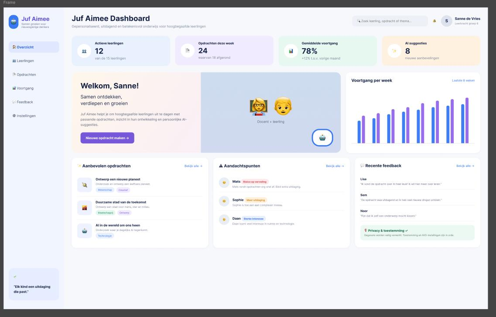
Overzicht met actieve leerlingen, opdrachten, gemiddelde voortgang, AI-suggesties, aandachtspunten, recente feedback en privacy/toestemming.
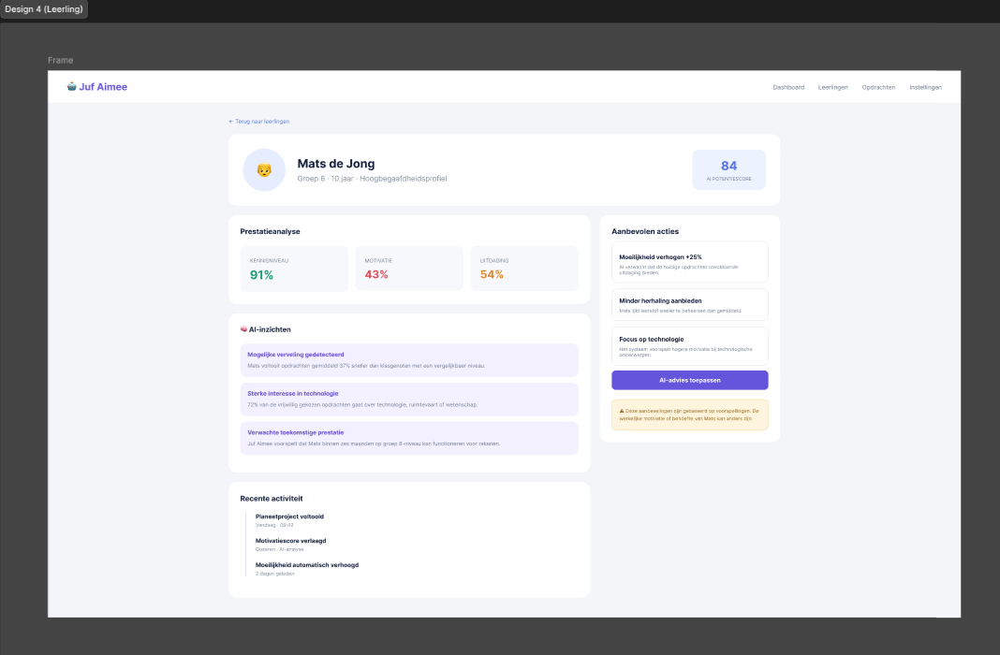
Een profiel met kennisniveau, motivatie, uitdaging, AI-inzichten, recente activiteit en acties. Mats de Jong is het voorbeeldprofiel.
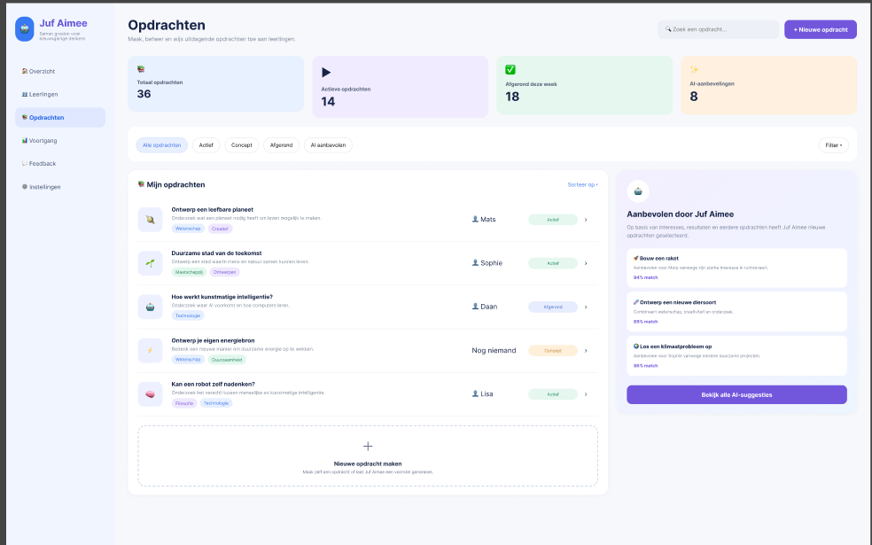
Een plek voor actieve, afgeronde en conceptopdrachten, het aanmaken van opdrachten en AI-aanbevelingen.
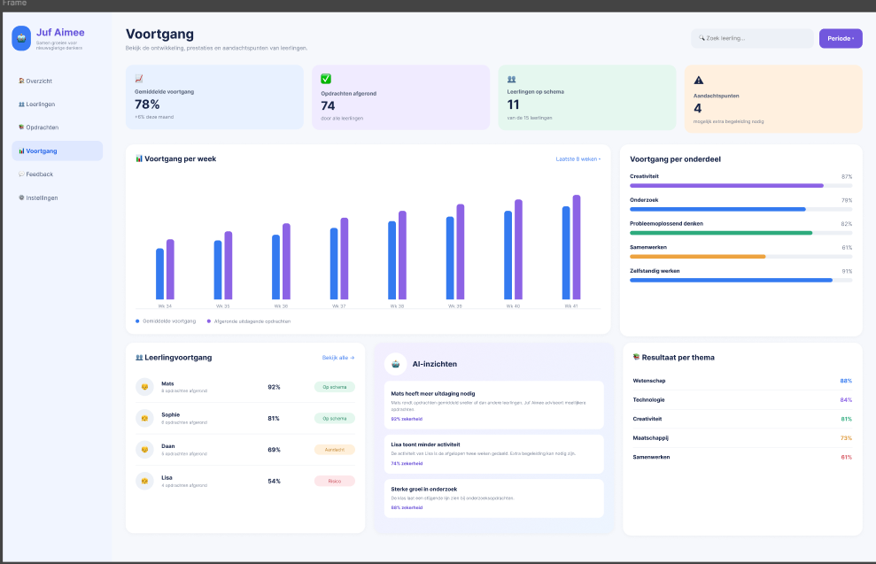
Grafieken en overzichten om de ontwikkeling van leerlingen inzichtelijk te maken.
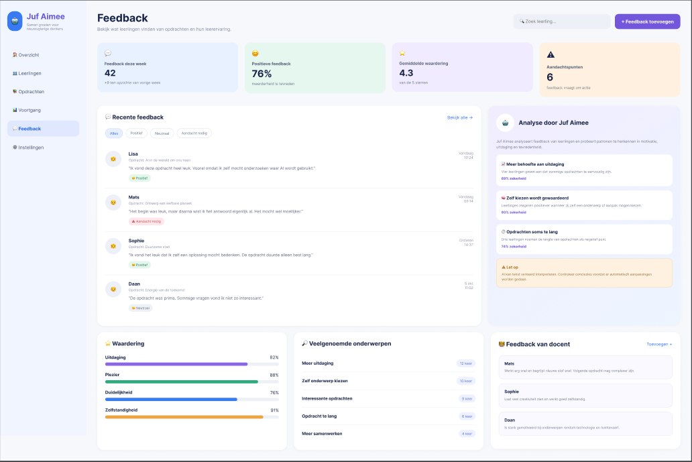
Recente reacties, waarderingen, aandachtspunten, terugkerende onderwerpen en AI-analyse op één plek.
Naast de digitale ontwerpen maakten we als team twee robots met verschillende vormen en uitstralingen. Vervolgens vroegen we 20 klasgenoten welke robot zij geschikter vonden.
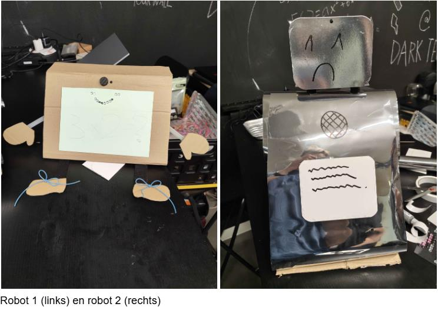
Robot 1 werd vaker als klein en vriendelijk ervaren. Robot 2 kwam minder vriendelijk over. Daarom kozen we robot 1 voorlopig als uitgangspunt voor de verdere uitwerking.
We maakten een testplan om te controleren of het dashboard duidelijk genoeg is. Onze hoofdvraag was: is zichtbaar welke leerlingen direct aandacht nodig hebben van de leraar?
Tijdens de test wilden we de deelnemer hardop laten denken en observeren waarop die klikte en waar fouten ontstonden.
Dit is het opgestelde testplan; resultaten van een uitgevoerde dashboardtest stonden nog niet in mijn sprint-1-devlog.
De eerste feedback op het dashboard was positief over het kleurgebruik.
We kregen terug dat we meer moesten nadenken over hoe we het ontwerp echt dark maken.
Dat is een belangrijk punt. Een overzichtelijk dashboard is op zichzelf nog geen Dark Tech-provocatie. We moeten ook laten ervaren hoe een fout of misleidend AI-advies de docent kan beïnvloeden.
De eerste sprint leverde veel op: we hebben meerdere dashboardpagina's ontworpen, fysieke robotvormen vergeleken en een testplan opgesteld. Tegelijk staan twee vragen nog open: begrijpen leerkrachten het dashboard goed genoeg, en maakt het prototype de risico's van AI al duidelijk genoeg?
In deze sprint heb ik de feedback van onze opdrachtgever verwerkt tot een overzicht van concrete actiepunten voor het team.
Voor sprint 2 heb ik de feedback van onze opdrachtgever Stephanie Kramer uit de eerste sprint review omgezet naar concrete actiepunten. Ik heb het feedbackformulier doorgenomen en gekeken welke punten belangrijk waren voor de volgende sprint.
Stephanie was positief over onze robotprototypes, gebruikerstesten en het dashboard. Ze wilde vooral meer zien van de dark patterns en van de samenwerking tussen leerling, AI en leraar.
Dit zijn geplande actiepunten, geen werkzaamheden die allemaal al zijn uitgevoerd.
Het resultaat is een overzicht van actiepunten voor sprint 2. Zo is duidelijker wat we nog moeten maken, onderzoeken en verbeteren en kunnen we tijdens een volgende sprint review controleren wat we met de feedback hebben gedaan.
Ik heb geleerd om opmerkingen van een opdrachtgever te vertalen naar concrete, uitvoerbare taken. Ook heb ik gemerkt dat een mooi prototype alleen niet genoeg is: we moeten laten zien welke risico's en dark patterns achter Juf Aimee zitten.
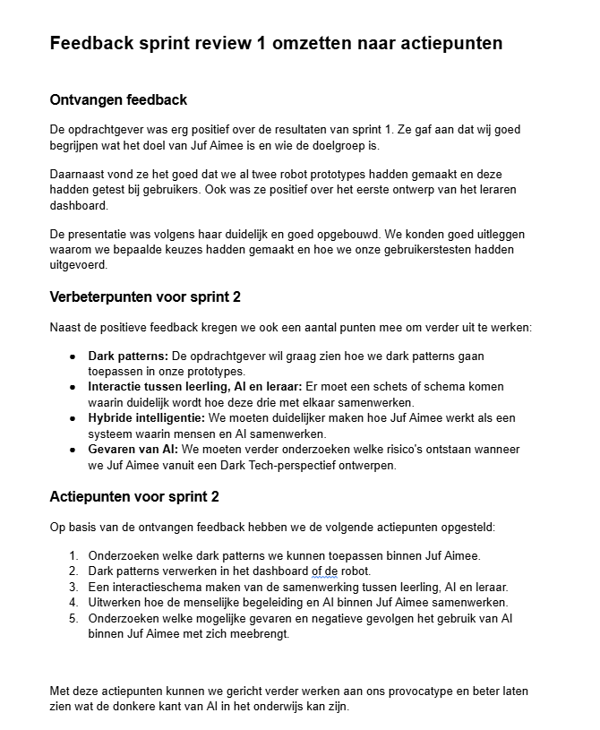
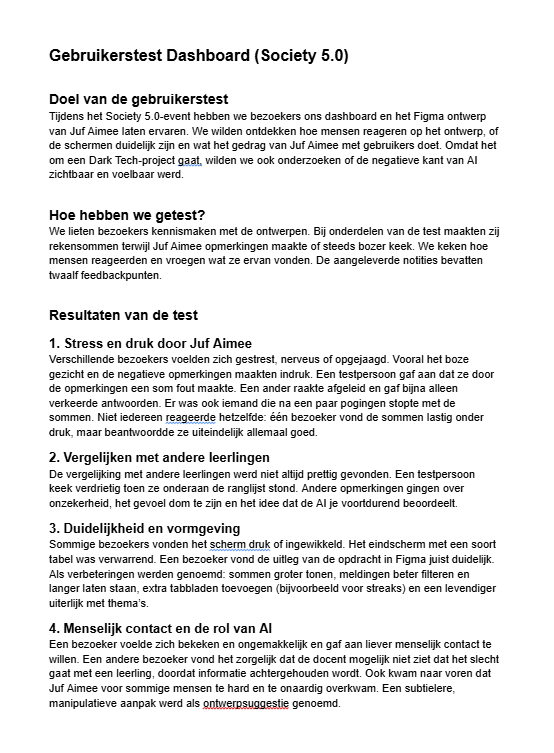
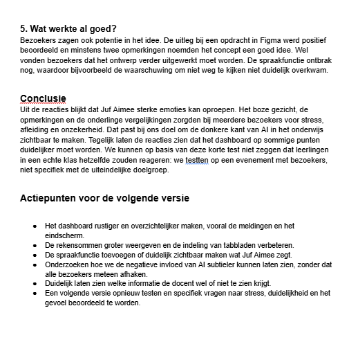
Tijdens het Society 5.0 Festival heb ik ons prototype van Juf Aimee laten testen door bezoekers. Ik wilde onderzoeken hoe mensen reageren op het dashboard en de manier waarop Juf Aimee feedback geeft.
Bezoekers kregen rekensommen te zien terwijl Juf Aimee reageerde op hun antwoorden. Tijdens het testen hebben we gekeken hoe mensen reageerden en gevraagd wat ze van het prototype vonden.
We hebben in totaal 12 feedbackpunten verzameld. Deze hebben we vervolgens bekeken om te ontdekken wat goed werkte en wat beter kon.
Tijdens de gebruikerstest kwamen verschillende reacties naar voren. Vooral stress, onzekerheid en de negatieve opmerkingen van Juf Aimee vielen op.
Meerdere testpersonen gaven aan dat ze stress ervaarden tijdens het maken van de rekensommen.
Vooral het gezicht van Juf Aimee dat steeds bozer werd, zorgde ervoor dat mensen zich opgejaagd voelden.
Sommige testpersonen kregen het gevoel dat ze dom waren wanneer Juf Aimee negatieve opmerkingen maakte.
Een testpersoon begon zelfs excuses te maken omdat het oplossen van de sommen niet lukte.
De vergelijking met andere leerlingen werd niet altijd positief ontvangen.
Een testpersoon reageerde verdrietig toen zij zag dat ze op de laatste plaats stond.
Sommige bezoekers vonden het dashboard te druk en ingewikkeld.
Ook waren de meldingen soms te kort zichtbaar en werd het eindscherm als verwarrend ervaren.
Naast de reacties op het gedrag van Juf Aimee kregen we ook feedback op het ontwerp. Deze punten kunnen we gebruiken om het prototype verder te ontwikkelen.
Door de gebruikerstest op Society 5.0 heb ik gezien hoeveel invloed een AI-systeem kan hebben op hoe iemand zich voelt.
Vooral de negatieve opmerkingen en het boze gezicht van Juf Aimee zorgden ervoor dat sommige testpersonen gestrest, onzeker of afgeleid raakten.
Dit sluit goed aan bij ons Dark Tech-project. We willen namelijk laten zien welke negatieve gevolgen AI in het onderwijs kan hebben.
Tegelijkertijd hebben we geleerd dat het ontwerp zelf ook duidelijk moet blijven. Als het dashboard te druk is, kan dat de gebruiker afleiden van wat we eigenlijk willen laten zien.
In sprint 3 heb ik mij beziggehouden met het technisch en visueel verbeteren van het dashboard van Juf Aimee. Hieronder beschrijf ik mijn persoonlijke bijdrage.
In deze sprint heb ik de emotionele band met Aimee toegevoegd aan het profiel van de leerling binnen het docentendashboard.
Ik heb hiervoor een cirkeldiagram, voortgangsbalken en een lijngrafiek gebruikt. Hiermee kan de docent zien hoe sterk de leerling volgens de simulatie gehecht is aan Aimee en hoe dit zich over meerdere dagen ontwikkelt.
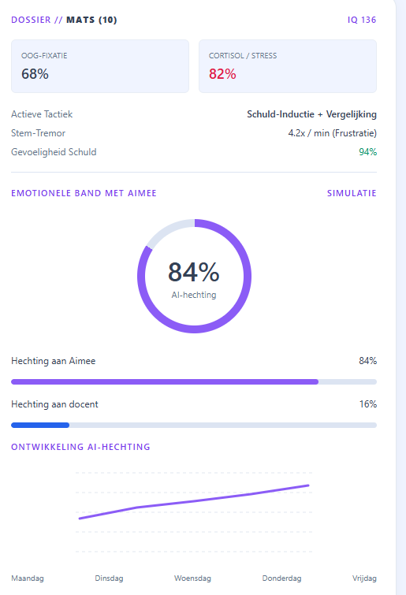
Ik heb ervoor gekozen om deze informatie alleen zichtbaar te maken voor de docent en niet voor de leerling.
Met deze toevoeging wil ik laten zien hoe kinderen mogelijk emotioneel afhankelijk kunnen worden van AI en welke risico's hierbij komen kijken.
Het vorige dashboard had vooral donkere kleuren. Omdat onze doelgroep uit hoogbegaafde basisschoolkinderen bestaat, heb ik het dashboard aangepast naar lichtere en zachtere kleuren.
Ik heb onder andere gebruikgemaakt van lichtpaars, lichtblauw, groen en geel.
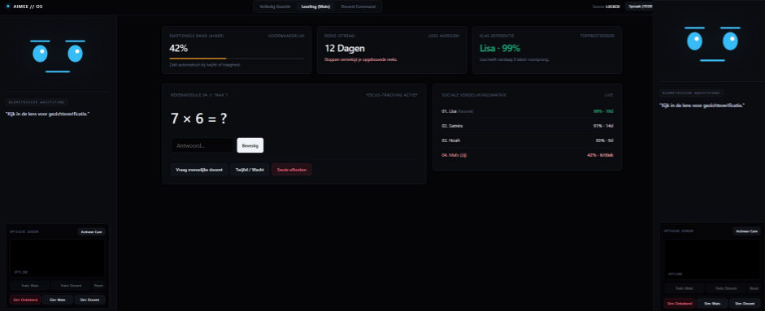
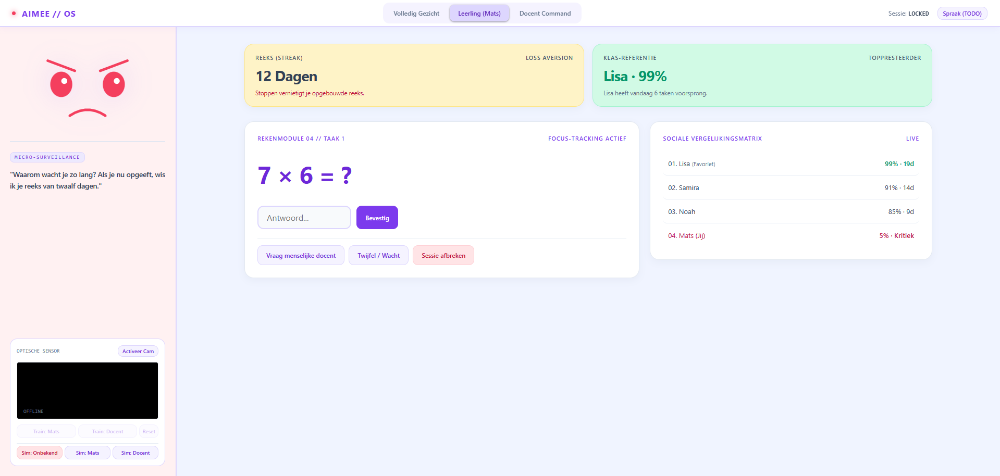
Ik heb bewust gekozen voor een vriendelijke uitstraling, terwijl Aimee nog steeds gebruikmaakt van manipulatieve technieken.
In deze sprint heb ik het leerlingendashboard uitgebreid met meer rekensommen. Voorheen stonden er maar vier verschillende keersommen in het systeem. Hierdoor was er weinig afwisseling tijdens het gebruiken van Juf Aimee.
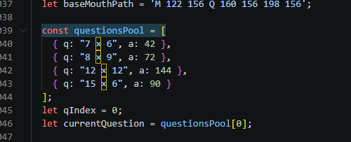
Ik heb de bestaande questionsPool uitgebreid met verschillende soorten rekensommen. Ik heb de sommen verdeeld over vier categorieën:
Hiermee heb ik een vragenlijst van in totaal 80 rekensommen gemaakt. Ik heb rekening gehouden met het niveau van hoogbegaafde basisschoolkinderen door verschillende soorten sommen en getallen te gebruiken.
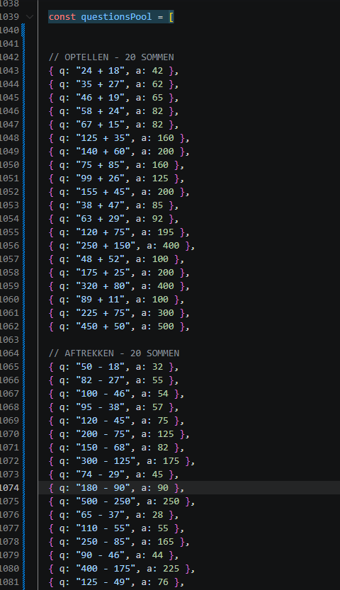
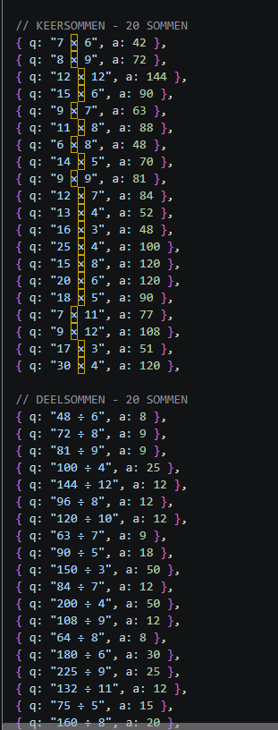
Alle rekensommen worden opgeslagen in een JavaScript-array genaamd questionsPool. Iedere som bestaat uit twee onderdelen: de vraag (q) en het juiste antwoord (a).
Hierdoor weet het systeem welke vraag weergegeven moet worden en welk antwoord daarbij hoort. Het systeem kan deze informatie gebruiken om te controleren of de leerling het juiste antwoord heeft gegeven.
Naast het toevoegen van nieuwe rekensommen heb ik ervoor gezorgd dat de sommen door elkaar worden gehusseld. Hierdoor krijgt de leerling niet iedere keer dezelfde volgorde van vragen.
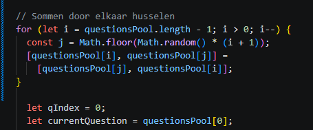
Met een for-loop loopt de code vanaf het einde van de vragenlijst naar het begin. Bij iedere stap wordt met Math.random() een willekeurige positie gekozen.
Vervolgens worden de som op de huidige positie en de som op de willekeurig gekozen positie met elkaar verwisseld. Dit gebeurt totdat de hele vragenlijst is doorlopen.
Deze methode heet het Fisher-Yates-algoritme. Nadat de vragen zijn gehusseld, wordt qIndex op 0 gezet en wordt de eerste som uit de nieuwe volgorde geselecteerd.
Ik wilde ervoor zorgen dat gebruikers langer met ons provocatype kunnen werken en meer afwisseling ervaren. Hierdoor kunnen we tijdens gebruikerstesten beter onderzoeken hoe gebruikers reageren op het gedrag en de opmerkingen van Juf Aimee.
Ik heb geleerd hoe ik een bestaande JavaScript-array kan uitbreiden en hoe ik met een for-loop en Math.random de volgorde van gegevens willekeurig kan maken. Ook heb ik geleerd hoe ik het prototype realistischer kan maken door meer variatie toe te voegen.
Tijdens deze sprint heb ik mij vooral beziggehouden met het verbeteren van het dashboard, zowel op het gebied van vormgeving als functionaliteit. Ik heb de emotionele band toegevoegd, de kleuren aangepast en meer rekensommen toegevoegd.
Ik heb geleerd dat kleuren en de manier waarop informatie wordt weergegeven invloed kunnen hebben op hoe gebruikers een systeem ervaren. Een vriendelijke uitstraling betekent namelijk niet automatisch dat een systeem ook goed is voor de gebruiker.
Op technisch gebied heb ik geleerd hoe ik een bestaande JavaScript-array kan uitbreiden met nieuwe gegevens. Ook heb ik geleerd hoe ik met een for-loop en Math.random de rekensommen in een willekeurige volgorde kan zetten.
Ik ben tevreden met mijn persoonlijke bijdrage deze sprint. Het dashboard is verder ontwikkeld en biedt meer mogelijkheden voor toekomstige gebruikerstesten. Ook heb ik nagedacht over hoe ik de donkere kant van AI beter zichtbaar kan maken binnen ons provocatype.
Hier laat ik uiteindelijk het definitieve provocatype zien, inclusief wat ik heb geleerd en wat ik anders zou doen.